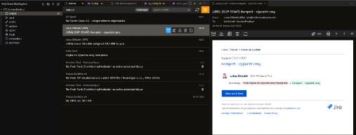

What it is
Mail Client is an open-source extension for Visual Studio Code that lets you read, write, and manage email without leaving your editor. It connects directly to your mailbox over IMAP and SMTP. Everything runs locally on your own machine — there is no intermediate server operated by us.
Features
- Account Management: Add, edit, and remove IMAP accounts through a user-friendly interface.
- Email Browsing & Search: Access folders from the sidebar, browse messages, and search within folders using IMAP search features.
- Compose Interface: WYSIWYG rich text editor with Markdown fallback mode.
- Basic Operations: Reply to messages, forward, and delete emails.
- Attachments: Upload and download email attachments — including local file selection even when connected over Remote SSH.
- Folder Management: Map special folders and create custom folder buttons.
- Image Whitelist: Whitelist trusted senders to automatically load remote images in future emails.
- Organize Messages: Archive, Spam, Trash, and Inbox actions with context-aware buttons.
- Address Book: Manage contacts and use autocomplete in the
To,Cc, andBccfields. Add unknown contacts with a single click. - Jira Integration: Pair emails with Jira issues, post comments, and open issues directly in the browser from the message detail view.
- Notes & Org Integration: Copy a stable link to an email or capture it as a task (org-mode TODO by default) into a configurable file. Links reopen the exact email later via a URI handler — works with org-mode link extensions and across editors (Cursor, VSCodium, …).
- Print Support: Print messages via the native OS prompt directly from the UI.
- Customizable Layout: Choose between a Side or Bottom panel for viewing message details in Split View.
- Calendar Support: View calendar invite (ICS) details directly in the email, including time, location, and attendees.
- Connection Reliability: Configurable keepalive mechanism using IMAP
NOOPcommands to prevent session timeouts. - OAuth2 Sign-in: Secure OAuth2 sign-in for Gmail and Microsoft 365, or classic username/password. Credentials are stored in the VS Code Secret Storage.
Requirements
- VS Code version 1.85.0 or newer.
- An IMAP account (e.g. Gmail, Outlook, or a custom server).
OAuth2 and your Google account
When you choose Gmail, the extension uses Google's OAuth2 to obtain permission to access your mailbox over IMAP/SMTP. Your email content is processed locally on your computer to display it in the editor. We do not operate any backend, we do not collect your data, and we do not share it with anyone. See our Privacy Policy for full details.
Get it
Source code, installation instructions, and the issue tracker are on GitHub: github.com/wdtbrchan/mail-client-vscode
License
This project is licensed under the Apache License 2.0.